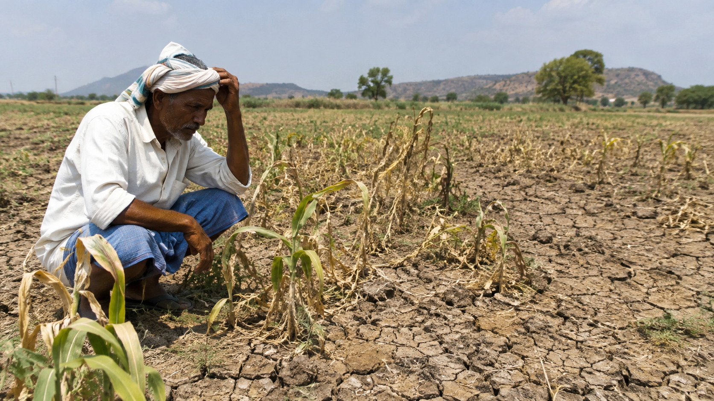

హైదరాబాద్: తెలంగాణలో ఈ ఏడాది వర్షపాతం లోటు ఆందోళన కలిగిస్తోంది. 2026 నైరుతి రుతుపవనాల సీజన్ ముగిసే సమయానికి రాష్ట్రవ్యాప్తంగా సాధారణం కంటే సుమారు 17 శాతం తక్కువ వర్షపాతం నమోదైంది. జూన్ 1 నుంచి సెప్టెంబర్ 30 వరకు కొనసాగిన నైరుతి రుతుపవనాల కాలంలో రాష్ట్రానికి సాధారణంగా 740.6 మిల్లీమీటర్ల వర్షపాతం రావాల్సి ఉండగా.. 615.5 మిల్లీమీటర్లు మాత్రమే నమోదైంది. దీంతో వర్షపాతం లోటు 17 శాతంగా నమోదైంది.
ఈసారి వర్షపాతం లోటు వ్యవసాయ రంగంతో పాటు తాగునీరు, పశుసంవర్ధక రంగం, గ్రామీణ ఉపాధి, భూగర్భ జలాల లభ్యత వంటి అంశాలపై ప్రభావం చూపే అవకాశం ఉంది. సాధారణంగా నైరుతి రుతుపవనాలు తెలంగాణకు ప్రధాన వర్షాధారంగా ఉంటాయి. ఈ కాలంలో కురిసే వర్షాలు చెరువులు, కుంటలు, సాగునీటి ప్రాజెక్టులు, భూగర్భ జలాలను నింపడంలో కీలక పాత్ర పోషిస్తాయి.
రాష్ట్రంలోని అన్ని ప్రాంతాల్లో ఒకే విధమైన పరిస్థితి లేదని వర్షపాతం గణాంకాలు చెబుతున్నాయి. 33 జిల్లాల్లో 18 జిల్లాలు వర్షపాతం లోటు కేటగిరీలో ఉండగా, 15 జిల్లాలు సాధారణ వర్షపాతం కేటగిరీలో ముగిశాయి. కొన్ని జిల్లాల్లో లోటు మరింత ఎక్కువగా నమోదైంది. దీంతో రాష్ట్ర సగటు గణాంకాలను మాత్రమే కాకుండా.. జిల్లాలు, మండలాల వారీగా నీటి పరిస్థితిని పరిశీలించడం అవసరంగా మారింది.

ఇదే సమయంలో రాష్ట్ర ప్రభుత్వం ఎల్ నినో ప్రభావాన్ని ప్రత్యేకంగా సమీక్షిస్తోంది. నైరుతి రుతుపవనాల సీజన్ ముగిసిన నేపథ్యంలో వర్షాభావ పరిస్థితులు ఏ ప్రాంతాల్లో తీవ్రంగా ఉన్నాయో అంచనా వేయడం, వ్యవసాయ రంగంపై ప్రభావాన్ని పరిశీలించడం, తాగునీటి అవసరాలను ముందుగానే గుర్తించడం వంటి అంశాలపై ప్రభుత్వం దృష్టి సారించింది. సుమారు 235 మండలాల్లో ప్రభావం తీవ్రంగా ఉందని అధికారులు కేబినెట్కు వివరించినట్లు నివేదికలు పేర్కొన్నాయి.
పరిస్థితిని వివిధ వర్గాల సూచనలతో సమీక్షించేందుకు అఖిలపక్ష సమావేశం నిర్వహించాలని ప్రభుత్వం నిర్ణయించింది. రాజకీయ పార్టీల ప్రతినిధులతో పాటు రైతు సంఘాలు, వ్యవసాయ రంగ నిపుణులు, ఇతర రంగాల నిపుణులతో చర్చలు జరిపి ఎల్ నినో ప్రభావం, వర్షపాతం లోటు వల్ల ఏర్పడే సమస్యలను ఎలా ఎదుర్కోవాలనే అంశంపై సూచనలు తీసుకునే అవకాశం ఉంది.
తాగునీటి విషయంలోనూ ప్రభుత్వం ముందస్తు చర్యలను కీలకంగా చూస్తోంది. వర్షాభావ పరిస్థితులు కొనసాగితే వేసవి ప్రారంభానికి ముందే కొన్ని గ్రామాలు, పట్టణాల్లో తాగునీటి సమస్య ఏర్పడే అవకాశం ఉంటుంది. అందుకే రిజర్వాయర్లలో నీటి నిల్వలు, చెరువుల పరిస్థితి, బోర్లు, భూగర్భ జలాల స్థాయిని ముందుగానే అంచనా వేయాల్సి ఉంటుంది.
వ్యవసాయ రంగంపై ప్రభావం కూడా ఈ పరిస్థితుల్లో అత్యంత ముఖ్యమైన అంశంగా మారుతోంది. తెలంగాణలో పెద్ద సంఖ్యలో రైతులు వర్షాధార వ్యవసాయంపై ఆధారపడుతున్నారు. సరైన సమయంలో వర్షాలు కురవకపోతే పంటల పెరుగుదల, దిగుబడి వంటి అంశాలపై ప్రభావం పడే అవకాశం ఉంటుంది. అందుకే నీటి పొదుపు పద్ధతులు, పంటల ప్రణాళిక వంటి అంశాలకు ప్రాధాన్యం ఇవ్వాల్సి ఉంటుంది.
వర్షపాతం లోటు నేపథ్యంలో భూగర్భ జలాలపై ఒత్తిడి పెరగకుండా నీటి వినియోగాన్ని నియంత్రించడం కూడా అవసరం. చెరువులు, చిన్న నీటిపారుదల వనరులు, నీటి సంరక్షణ పనులను బలోపేతం చేయడం ద్వారా వర్షపాతం తక్కువగా ఉన్న సంవత్సరాల్లో కూడా రైతులకు కొంత భరోసా కల్పించే అవకాశం ఉంటుంది.
గ్రామీణ ఉపాధి, జీవనోపాధి అంశాలు కూడా వర్షాభావ పరిస్థితుల్లో కీలకంగా మారనున్నాయి. వ్యవసాయ పనులు తగ్గినప్పుడు వ్యవసాయ కూలీల ఆదాయంపై ప్రభావం పడే అవకాశం ఉంటుంది. అందువల్ల అవసరమైన ప్రాంతాల్లో గ్రామీణ ఉపాధి అవకాశాలను పెంచడం, నీటి సంరక్షణ పనులు, చెరువుల పునరుద్ధరణ వంటి పనులను చేపట్టడం అవసరం.
ఎల్ నినో ప్రభావం విషయంలో వాతావరణ పరిస్థితులను నిరంతరం పర్యవేక్షించడం అవసరం. ప్రతి ప్రాంతంలో వర్షపాతం పరిస్థితులు ఒకే విధంగా ఉండవు. స్థానిక వాతావరణ వ్యవస్థలు, వర్షాల సమయం, తీవ్రత వంటి అంశాలు కూడా ప్రభావం చూపుతాయి. అందువల్ల వాతావరణ శాఖ అంచనాలు, స్థానిక వర్షపాతం పరిస్థితులు, నీటి వనరుల స్థాయిని కలిపి పరిశీలించడం అవసరం.
అఖిలపక్ష సమావేశం నేపథ్యంలో రాష్ట్రంలోని వివిధ రాజకీయ పార్టీల ప్రతినిధులు, రైతు సంఘాలు, వ్యవసాయ నిపుణులు, నీటి వనరుల నిపుణుల నుంచి సూచనలు తీసుకునే అవకాశం ఉంది. ఎల్ నినో ప్రభావాన్ని ఎదుర్కోవడానికి దీర్ఘకాలికంగా ఎలాంటి చర్యలు తీసుకోవాలి, తాగునీటి భద్రతను ఎలా పెంచాలి, వర్షాభావం ప్రభావిత మండలాల్లో రైతులకు ఎలాంటి సహాయం అందించాలి వంటి అంశాలు చర్చకు వచ్చే అవకాశం ఉంది.
మరోవైపు ప్రభావిత మండలాలకు కేంద్ర ప్రభుత్వ సహాయం కోరే అంశాన్ని కూడా రాష్ట్ర ప్రభుత్వం పరిశీలిస్తోంది. కరువు తరహా పరిస్థితులు ఉన్న మండలాలకు సంబంధించిన నష్టాన్ని అంచనా వేసి నివేదిక సిద్ధం చేసే ప్రక్రియ కొనసాగుతోంది. వ్యవసాయం, తాగునీరు, గ్రామీణ జీవనోపాధి వంటి రంగాల్లో ఏర్పడిన ప్రభావాన్ని పరిగణనలోకి తీసుకునే అవకాశం ఉంది.
మొత్తంగా చూస్తే తెలంగాణలో 2026 నైరుతి రుతుపవనాల ముగింపు నేపథ్యంలో వర్షపాతం లోటుపై ప్రభుత్వం అప్రమత్తంగా వ్యవహరిస్తోంది. రాష్ట్ర సగటు వర్షపాతం లోటు 17 శాతంగా ఉన్నప్పటికీ.. జిల్లాలు, మండలాల వారీగా పరిస్థితులు భిన్నంగా ఉన్నాయి. నీటి వనరులు, భూగర్భ జలాలు, వ్యవసాయ పరిస్థితులు, తాగునీటి అవసరాలను ప్రభుత్వం నిరంతరం పర్యవేక్షించాల్సి ఉంటుంది.
ప్రస్తుతం తెలంగాణలో రాష్ట్రవ్యాప్తంగా అధికారిక కరువు ప్రకటన కంటే.. వర్షపాతం లోటు మరియు కొన్ని మండలాల్లో కరువు తరహా పరిస్థితుల నేపథ్యంలో ప్రభుత్వం సమీక్షిస్తున్న దశలో ఉంది. కేబినెట్ సబ్కమిటీ నివేదిక, అఖిలపక్ష సమావేశం, నిపుణులతో జరిగే చర్చల తర్వాత ప్రభుత్వం తీసుకునే చర్యలు తదుపరి పరిస్థితిని నిర్ణయించనున్నాయి.
తెలంగాణలో వర్షపాతం లోటు నేపథ్యంలో జిల్లాల వారీగా పరిస్థితిని మరింత లోతుగా పరిశీలించాల్సిన అవసరం ఏర్పడింది. ఒక ప్రాంతంలో సాధారణానికి దగ్గరగా వర్షాలు నమోదైనా.. అదే జిల్లాలోని కొన్ని మండలాల్లో మాత్రం వర్షపాతం తక్కువగా ఉండే అవకాశం ఉంది. అందువల్ల రాష్ట్రస్థాయి సగటు గణాంకాలతో పాటు మండలాల వారీగా నమోదైన వర్షపాతం, సాగు విస్తీర్ణం, నీటి వనరుల లభ్యత వంటి అంశాలను కలిపి పరిశీలించడం ద్వారా మాత్రమే వాస్తవ పరిస్థితిని అంచనా వేయగలుగుతారు. అధికారులు ఇప్పటికే అందుబాటులో ఉన్న గణాంకాలను సమీక్షిస్తూ ప్రభావిత ప్రాంతాలపై ప్రత్యేక దృష్టి పెట్టాల్సిన అవసరం ఉంది.
వర్షాభావ పరిస్థితులు కొనసాగితే వచ్చే పంటల సాగు ప్రణాళికపైనా ప్రభావం పడే అవకాశం ఉంటుంది. సాధారణంగా రైతులు వర్షాల ఆధారంగా పంటల ఎంపిక, విత్తనాల కొనుగోలు, సాగు సమయాన్ని నిర్ణయిస్తారు. నీటి లభ్యతపై అనిశ్చితి ఉంటే కొన్ని ప్రాంతాల్లో సాగు విస్తీర్ణం తగ్గే అవకాశం ఉంటుంది. ఇలాంటి సమయంలో వ్యవసాయ శాఖ రైతులకు ప్రాంతానుసారంగా పంటల ఎంపికపై సూచనలు అందించడం, అందుబాటులో ఉన్న నీటి వనరులను దృష్టిలో పెట్టుకుని సాగు ప్రణాళిక రూపొందించుకునేలా అవగాహన కల్పించడం అవసరం. పంటల పరిస్థితితో పాటు విత్తనాలు, ఎరువులు, పురుగుమందుల వినియోగంపై కూడా రైతులు జాగ్రత్తగా నిర్ణయాలు తీసుకోవాల్సి ఉంటుంది. వర్షాలు ఎప్పుడు పడతాయన్న దానిపై స్పష్టత లేని సమయంలో ముందుగానే అధిక పెట్టుబడులు పెట్టడం రైతులకు ఆర్థిక భారం కావచ్చు. వాతావరణ పరిస్థితులను పరిశీలించి వ్యవసాయ అధికారుల సూచనల మేరకు సాగు పనులను కొనసాగించడం ఉపయోగకరంగా ఉంటుంది. ముఖ్యంగా వర్షాధార ప్రాంతాల్లో రైతులకు స్థానిక పరిస్థితులకు అనుగుణంగా సలహాలు అందించడం కీలకంగా మారుతుంది. నీటి వనరుల నిర్వహణలో రిజర్వాయర్ల నీటి నిల్వలు కూడా ముఖ్యమైన అంశంగా మారనున్నాయి. ప్రాజెక్టుల్లో ప్రస్తుతం ఎంత నీరు అందుబాటులో ఉంది, తాగునీటికి ఎంత అవసరం ఉంటుంది, వ్యవసాయ అవసరాలకు ఎంత నీటిని వినియోగించవచ్చు అనే అంశాలపై అధికారులు సమగ్ర ప్రణాళిక రూపొందించాల్సి ఉంటుంది. తాగునీటికి ప్రాధాన్యం ఇస్తూనే వ్యవసాయ అవసరాలను సమతుల్యం చేయడం అవసరం. నీటి వినియోగంలో ముందస్తు ప్రణాళిక ఉంటే వేసవి సమయంలో ఏర్పడే ఒత్తిడిని కొంతవరకు తగ్గించవచ్చు. చెరువులు, కుంటలు, కాలువలు వంటి చిన్న నీటి వనరుల సంరక్షణ కూడా దీర్ఘకాలికంగా ఉపయోగపడుతుంది. గ్రామీణ ప్రాంతాల్లో ఉన్న అనేక చిన్న నీటి వనరులు వర్షపు నీటిని నిల్వ చేయడంతో పాటు భూగర్భ జలాల రీఛార్జ్కు సహాయపడతాయి. వాటిలో పూడిక పేరుకుపోయి నీటి నిల్వ సామర్థ్యం తగ్గిన ప్రాంతాలను గుర్తించి అవసరమైన పనులు చేపట్టడం ద్వారా భవిష్యత్తులో వచ్చే వర్షాలను మరింత సమర్థంగా నిల్వ చేసుకోవచ్చు. స్థానిక సంస్థలు, నీటి వనరుల శాఖ, గ్రామీణ ప్రజల సమన్వయం ఇందులో కీలకంగా ఉంటుంది.
వర్షాభావ పరిస్థితుల సమయంలో గ్రామీణ ప్రాంతాల్లో ఉపాధి అవకాశాలపైనా ప్రత్యేక దృష్టి అవసరం. వ్యవసాయ పనులు తగ్గితే కూలీలకు పని దొరకడం కష్టమవుతుంది. దీంతో కుటుంబాల ఆదాయంపై ప్రభావం పడే అవకాశం ఉంటుంది. నీటి సంరక్షణ, చెరువుల అభివృద్ధి, కాలువల మరమ్మతులు, గ్రామీణ మౌలిక వసతుల పనులు వంటి కార్యక్రమాలను వేగవంతం చేయడం ద్వారా ఒకవైపు నీటి వనరులను మెరుగుపరచడంతో పాటు మరోవైపు గ్రామీణ ప్రాంతాల్లో ఉపాధి అవకాశాలను కల్పించవచ్చు. పశుసంవర్ధక రంగంలో కూడా ముందస్తు చర్యలు అవసరం. వర్షాలు తక్కువగా ఉంటే పచ్చిమేత ఉత్పత్తి తగ్గే అవకాశం ఉంటుంది. మేత కొరత ఏర్పడితే పశువులను పెంచే రైతులపై అదనపు ఆర్థిక భారం పడుతుంది. అందువల్ల అవసరమైన ప్రాంతాల్లో మేత నిల్వలు, పశువులకు తాగునీటి సదుపాయాలు, పశువైద్య సేవలు అందుబాటులో ఉండేలా అధికారులు ప్రణాళిక రూపొందించాలి. గ్రామీణ కుటుంబాల జీవనోపాధిలో పశుసంవర్ధక రంగానికి ఉన్న ప్రాధాన్యాన్ని దృష్టిలో పెట్టుకుని ఈ అంశాన్ని కూడా సమగ్ర కరువు అంచనాలో భాగం చేయాల్సి ఉంటుంది. పట్టణ ప్రాంతాల్లోనూ నీటి వినియోగంపై అవగాహన పెంచాల్సిన అవసరం ఉంది. వేసవి కాలంలో తాగునీటి డిమాండ్ పెరిగే అవకాశం ఉన్నందున ప్రజలు అవసరానికి మించి నీటిని వృథా చేయకుండా జాగ్రత్తలు తీసుకోవాలి. అపార్ట్మెంట్లు, వాణిజ్య సంస్థలు, పరిశ్రమలు కూడా నీటి వినియోగాన్ని సమర్థంగా నిర్వహించాల్సి ఉంటుంది. వర్షపు నీటి సంరక్షణ, రూఫ్టాప్ రైన్వాటర్ హార్వెస్టింగ్ వంటి చర్యలను ప్రోత్సహించడం ద్వారా పట్టణ ప్రాంతాల్లో భూగర్భ జలాలపై కొంత ఉపశమనం కల్పించవచ్చు.
వాతావరణ మార్పుల నేపథ్యంలో భవిష్యత్తులో వర్షపాతం పంపిణీలో మార్పులు చోటుచేసుకునే అవకాశం ఉందనే అంశాన్ని కూడా దీర్ఘకాలిక ప్రణాళికల్లో పరిగణనలోకి తీసుకోవాలి. వర్షాలు మొత్తం పరిమాణంలో సాధారణంగా ఉన్నప్పటికీ అవి తక్కువ రోజుల్లో భారీగా కురిసి మిగిలిన సమయంలో పొడిబారిన పరిస్థితులు ఏర్పడవచ్చు. అలాంటి పరిస్థితుల్లో వర్షపు నీటిని వేగంగా నిల్వ చేయడం, చెరువులు మరియు చిన్న నీటి వనరులను బలోపేతం చేయడం చాలా అవసరం. కేవలం వర్షపాతం మొత్తం కాకుండా వర్షాల పంపిణీని కూడా విశ్లేషించడం ఉపయోగకరంగా ఉంటుంది. వర్షాభావ పరిస్థితుల్లో ప్రజలకు సరైన సమాచారం అందించడం కూడా ప్రభుత్వానికి ముఖ్యమైన బాధ్యతగా మారుతుంది. నీటి లభ్యత, పంటల పరిస్థితి, వాతావరణ హెచ్చరికలు, ప్రభుత్వం చేపడుతున్న చర్యలపై అధికారిక సమాచారం ప్రజలకు ఎప్పటికప్పుడు అందితే అనవసర ఆందోళనలు తగ్గుతాయి. జిల్లాలు, మండలాల వారీగా పరిస్థితిపై అధికారిక నివేదికలను అందుబాటులో ఉంచడం ద్వారా రైతులు, ప్రజలు తమ ప్రాంతానికి సంబంధించిన సమాచారాన్ని తెలుసుకునే అవకాశం ఉంటుంది. అధికారిక గణాంకాల ఆధారంగా నిర్ణయాలు తీసుకోవడం ఈ సమయంలో కీలకం. రైతులు కూడా తమ ప్రాంతంలో అందుబాటులో ఉన్న నీటి వనరులను దృష్టిలో పెట్టుకుని సాగు నిర్ణయాలు తీసుకోవడం అవసరం. బోర్లు, బావులు, చెరువులపై ఆధారపడే రైతులు నీటిని పొదుపుగా వినియోగించే పద్ధతులను పాటించాలి. డ్రిప్ ఇరిగేషన్, స్ప్రింక్లర్ వంటి నీటి పొదుపు సాగు పద్ధతులు అనుకూలంగా ఉన్న ప్రాంతాల్లో వాటిని ఉపయోగించడం ద్వారా నీటి వినియోగాన్ని తగ్గించే అవకాశం ఉంటుంది. అయితే ఏ పద్ధతి అనుకూలమో స్థానిక వ్యవసాయ పరిస్థితులను బట్టి నిర్ణయించుకోవాలి.
రాష్ట్రంలో వర్షాభావ పరిస్థితులపై ప్రభుత్వం తీసుకునే నిర్ణయాలకు క్షేత్రస్థాయి సమాచారం ఎంతో అవసరం. కేవలం వర్షపాతం గణాంకాలను మాత్రమే కాకుండా పంటల నష్టం, నీటి నిల్వలు, భూగర్భ జలాల స్థాయి, పశుసంవర్ధక రంగంపై ప్రభావం, గ్రామీణ ఉపాధి పరిస్థితి వంటి అంశాలను కలిపి పరిశీలించాలి. జిల్లాల నుంచి వచ్చే నివేదికలను సమగ్రంగా విశ్లేషించిన తర్వాతే అవసరమైన ప్రాంతాల్లో ప్రత్యేక చర్యలు చేపట్టే అవకాశం ఉంటుంది. ఇక రానున్న కాలంలో వాతావరణ పరిస్థితులను నిరంతరం గమనించడం అత్యంత ముఖ్యంగా మారనుంది. వర్షపాతం లోటు తగ్గుతుందా, మరింత పెరుగుతుందా అనే అంశం రాబోయే వర్షాలపై ఆధారపడి ఉంటుంది. వాతావరణ శాఖ నుంచి వచ్చే సూచనలు, నీటి వనరుల పరిస్థితి, పంటల స్థితిగతులను సమన్వయంగా పరిశీలిస్తూ ప్రభుత్వం నిర్ణయాలు తీసుకోవాల్సి ఉంటుంది. పరిస్థితి మారుతున్న కొద్దీ జిల్లాలు, మండలాల వారీగా చర్యలను కూడా మార్చుకునే సౌలభ్యం ఉండాలి. మొత్తంగా చూస్తే తెలంగాణలో వర్షపాతం లోటు అనేది కేవలం వ్యవసాయానికి సంబంధించిన సమస్యగా చూడకుండా నీరు, ఉపాధి, పశుసంవర్ధక రంగం, గ్రామీణ ఆర్థిక వ్యవస్థ వంటి అనేక అంశాలతో అనుసంధానమైన సమస్యగా పరిగణించాల్సి ఉంటుంది. ముందస్తు ప్రణాళిక, నీటి సంరక్షణ, రైతులకు సరైన వ్యవసాయ సలహాలు, తాగునీటి భద్రత, గ్రామీణ ఉపాధి కార్యక్రమాలు సమన్వయంతో కొనసాగితే వర్షాభావ ప్రభావాన్ని ఎదుర్కొనే సామర్థ్యం పెరుగుతుంది. రానున్న నెలల్లో నమోదయ్యే వర్షపాతం, నీటి నిల్వలు, పంటల పరిస్థితి ఆధారంగా తెలంగాణలో పరిస్థితిపై మరింత స్పష్టత వచ్చే అవకాశం ఉంది.